All preselected cases are retained. Depth acceptance and annotation error are separate. Supplied rectangles; unchanged 5 mm / 70% support / 10% contradiction gates. Fitting and verification use the same depth. This is not detection, heavy-occlusion or grasp qualification.
T-LESS, Hodan et al., WACV 2017, CC BY 4.0 and attribution. Derived crops/overlays/clouds are modifications; no endorsement implied.
Complete summary and timing scopes · Method and limitations
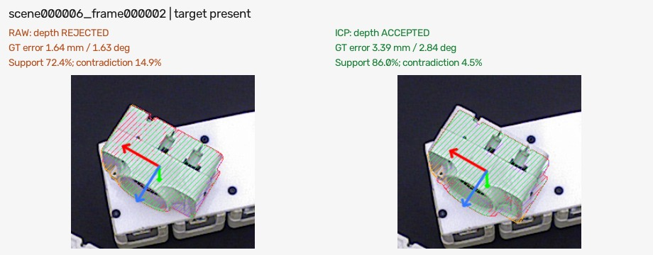
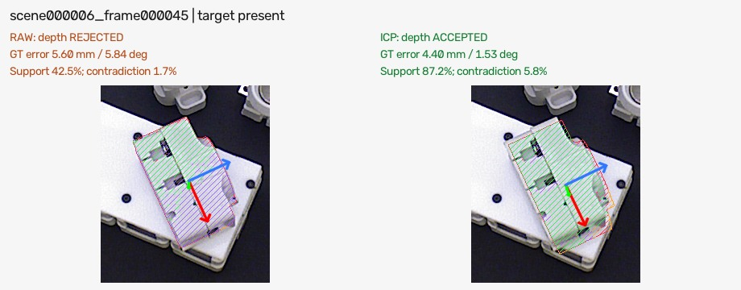
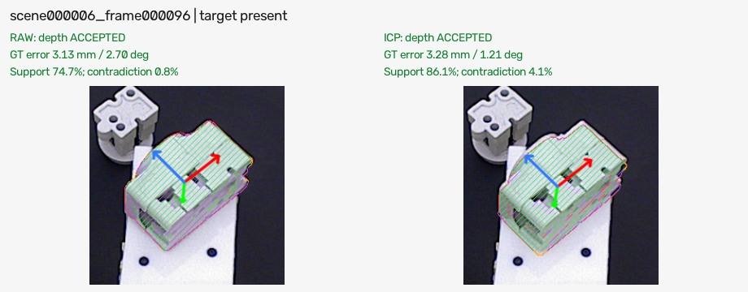
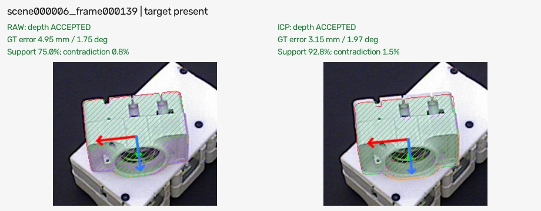
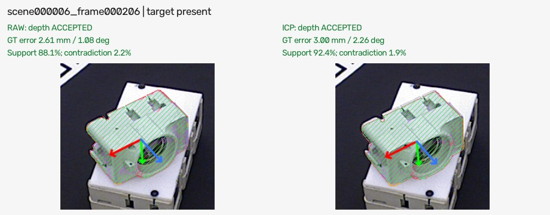
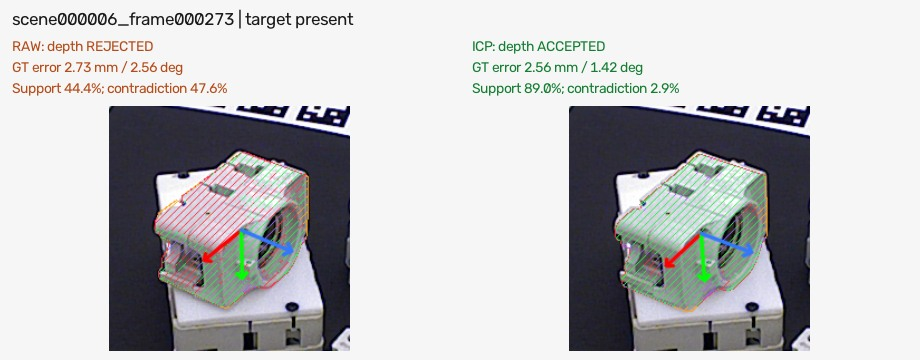
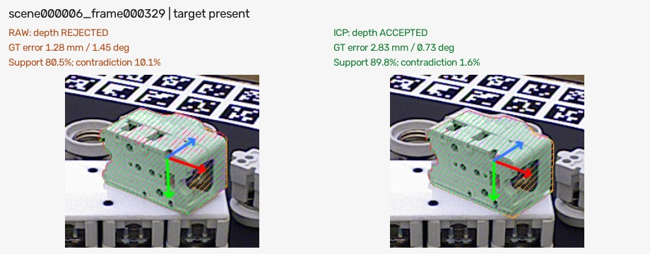
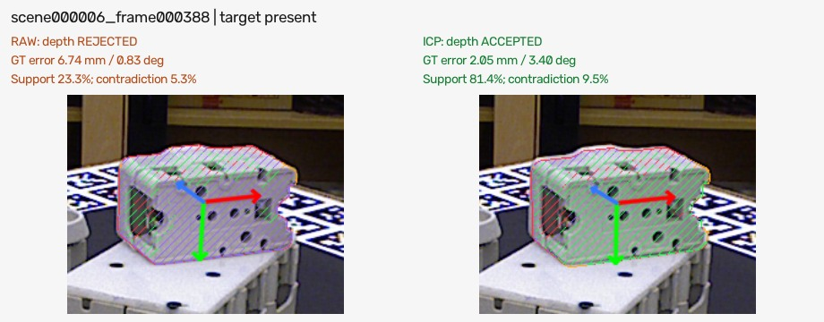
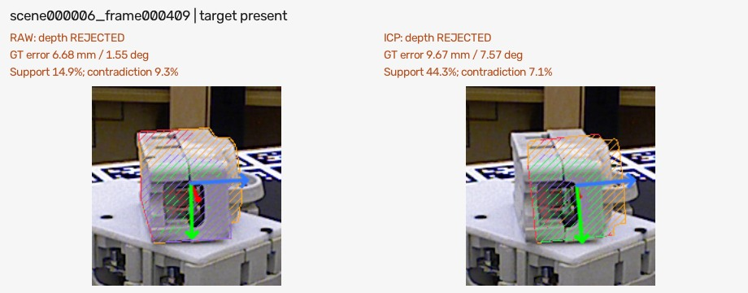
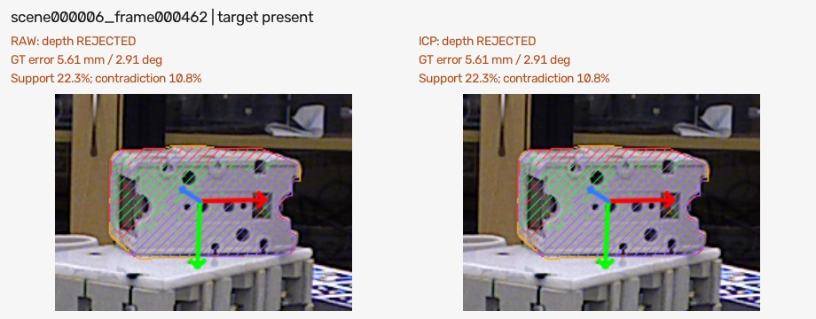
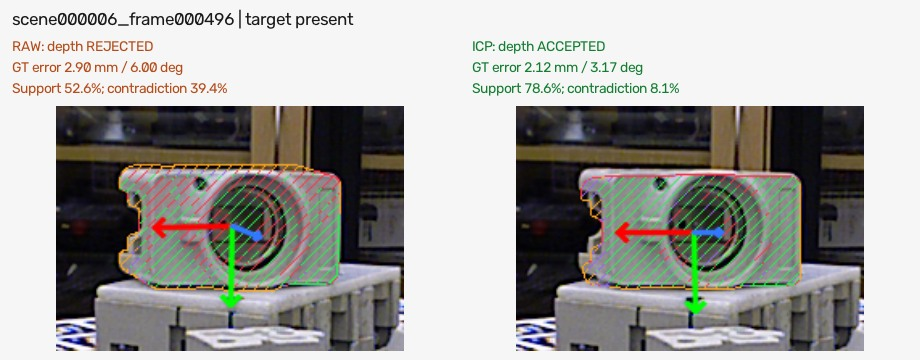
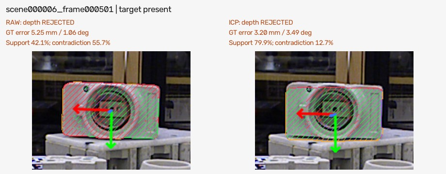
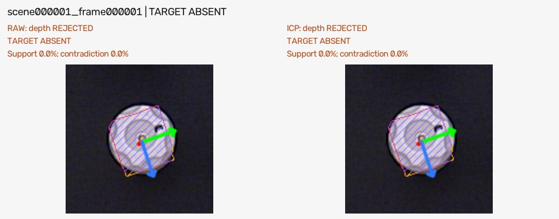
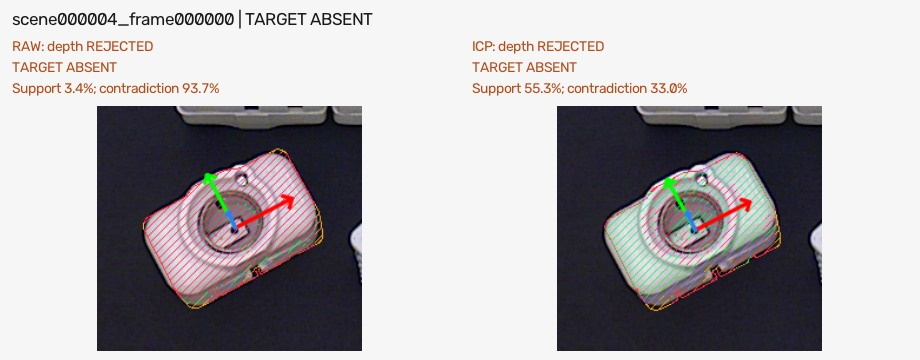
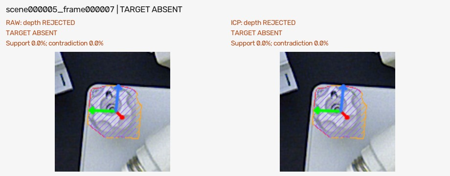
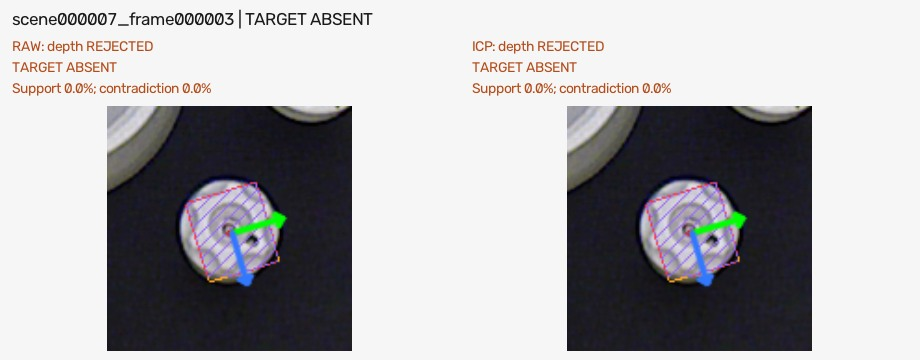
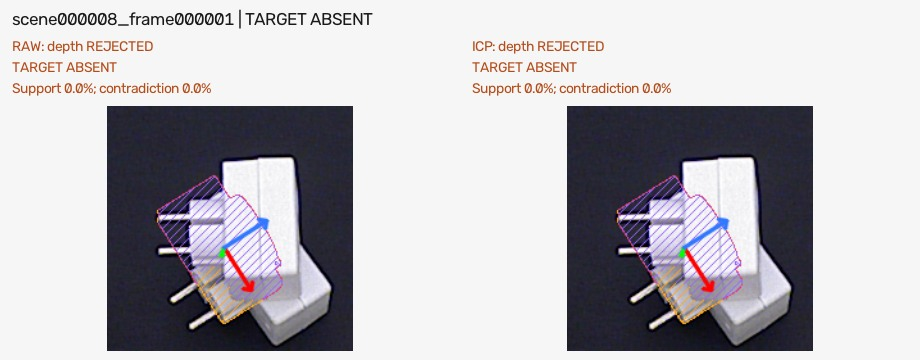
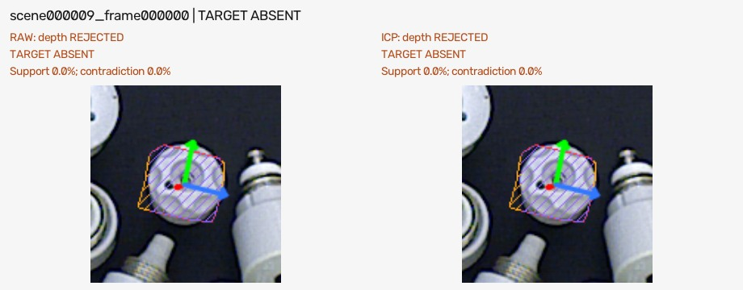
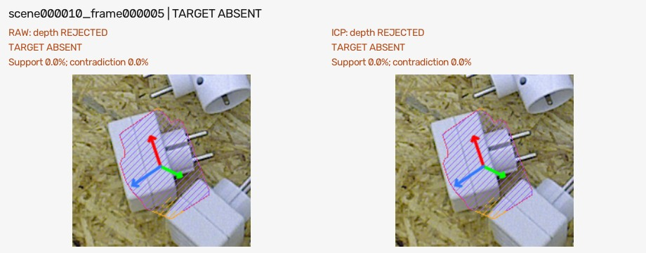
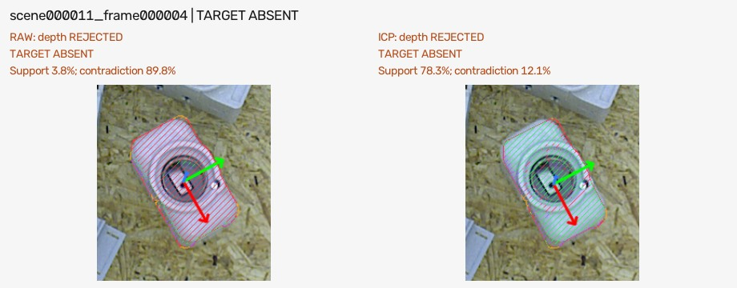
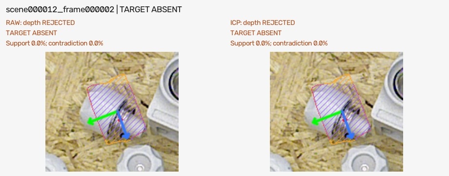
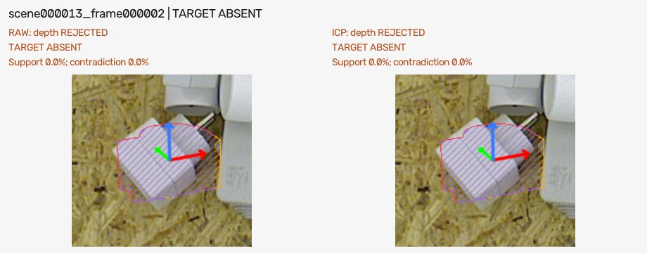
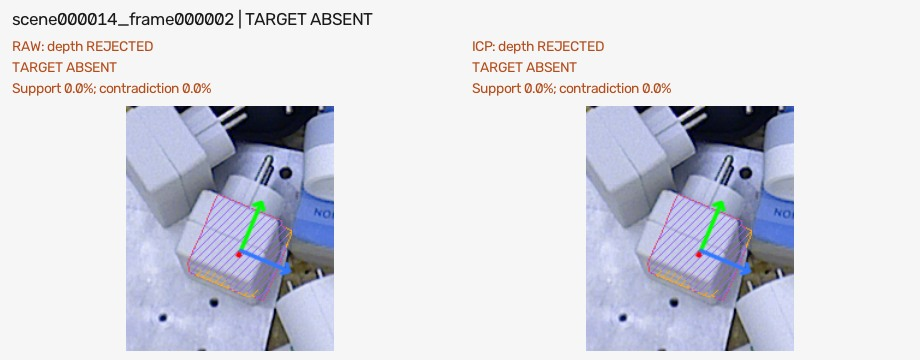
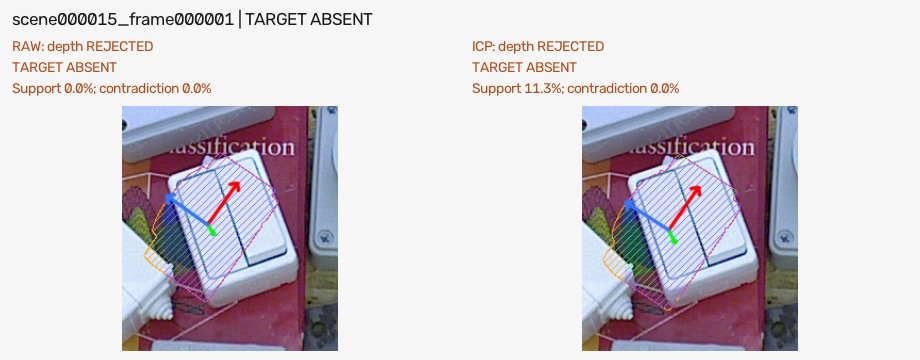
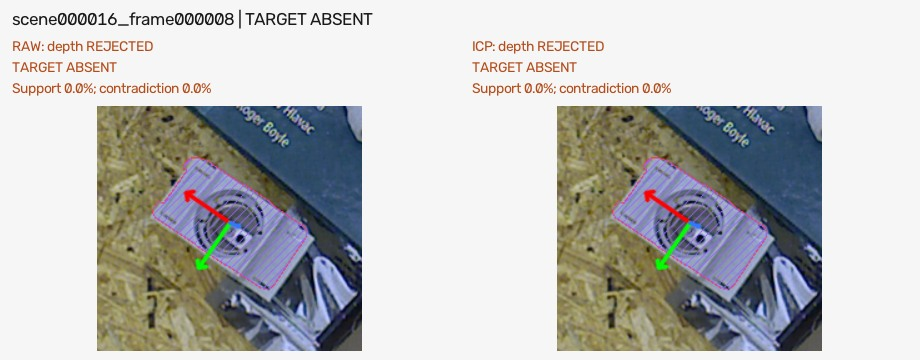
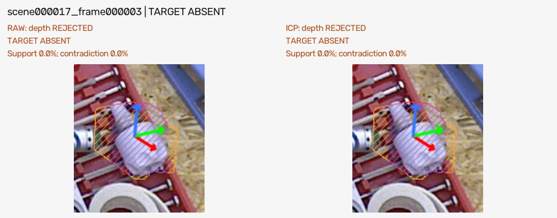
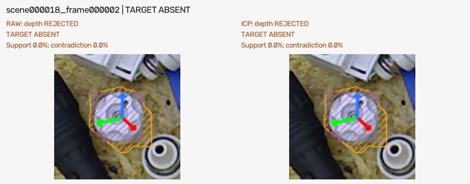
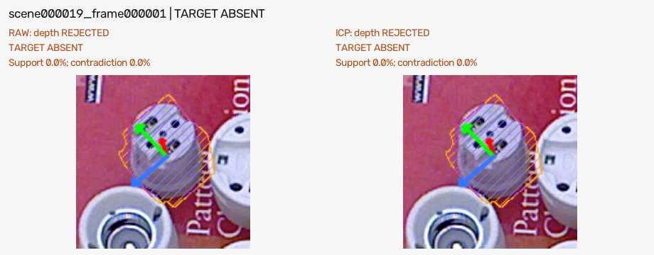
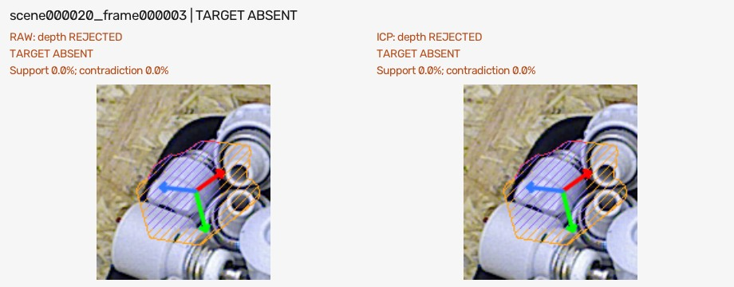